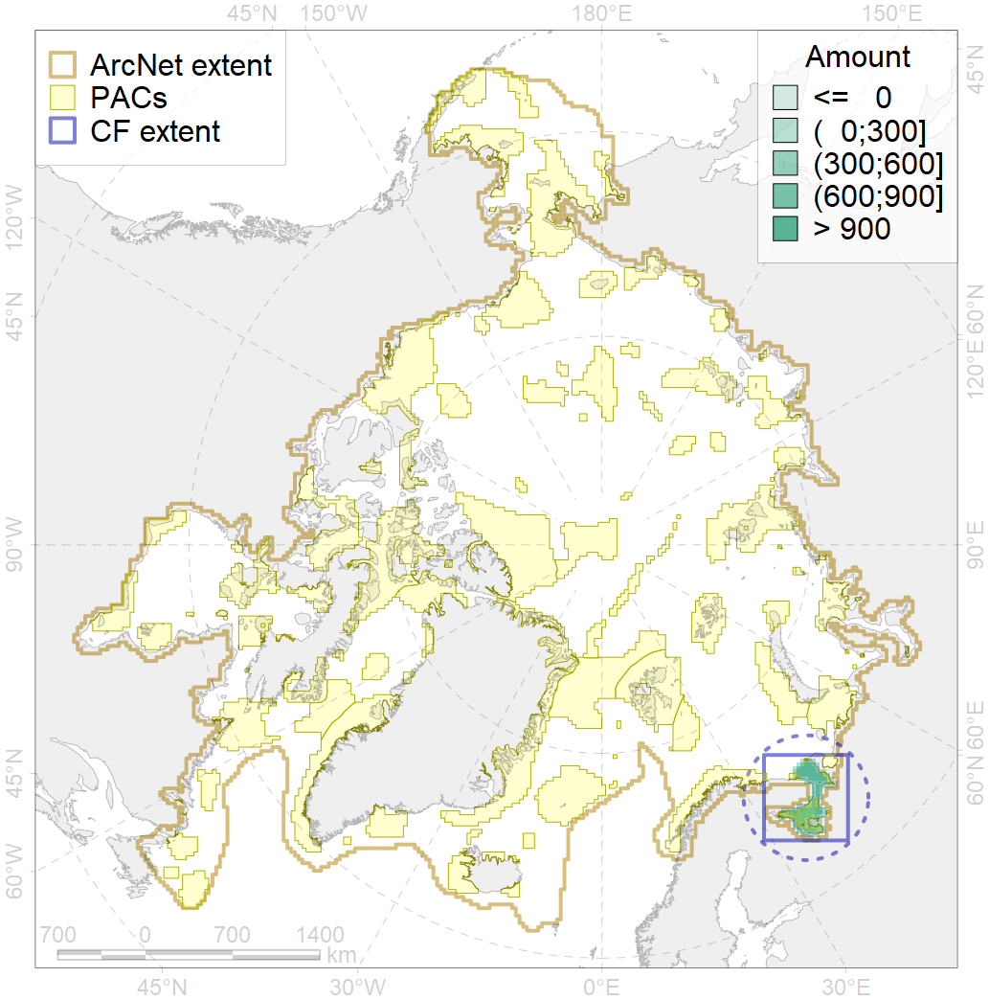
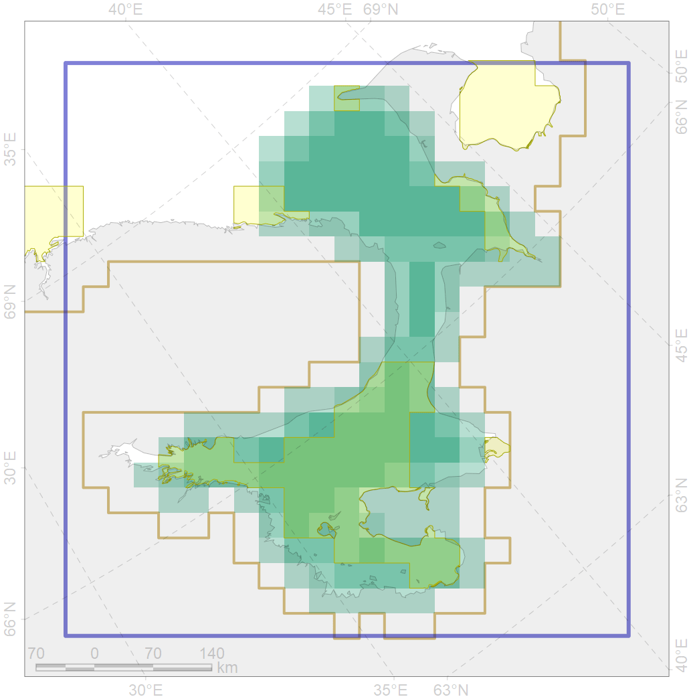

5034

| CF ID | 5034 |
| CF Name | Beluga of the White Sea summer distribution |
| Time Period | 1956-2017 |
| Source(s) | GROM; Glazov et al subm |
| Seasonality | June-September |
| Depth Horizon | 0-300 |
| Methodology | Various |
| Author Name | Filatova |
| Notes | |
| Conservation Target Set in the Scenario | 0.24 |
| Conservation Target Achieved in the Scenario | 0.394 (Scenario: 164.3%) |
| PAC ID | Proportion in the PAC | Contribution to ArcNet Target Achievement | PAC’s Contribution to the Achieved Target |
|---|---|---|---|
| 24 | 3.3% | 12.6% | 7.7% |
| 25 | 1.4% | 4.5% | 2.7% |
| 26 | 37.4% | 128.1% | 78.0% |
| inner | 42.1% | 145.2% | 88.4% |
| outer | 57.9% | 19.1% | 11.6% |